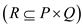
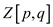

Let M be an n*n matrix and assume and regularity condition is imposed such that where c < ½ and L(n) is the time taken to find an LUP decomposition of n*n matrix. Decompose L such that:
where is . Let the decomposition of be where is equal to , is equal to and is equal to .
To attain the LUP decomposition of M, perform two LUP decompositions that are of half size, number of matrix multiplication and inversions that are constant.
The equivalence of matrix inverse and multiplication concludes that the run time is O(M(n))

BOOLEAN-MATRIX MULTIPLICATION (BMM) AND TRANSITIVE-CLOSURE RELATIONSHIP
A Boolean matrix is also called as a matrix having entries with domain. It is a matrix which is used to establish a relationship between various sets.
For better understanding of binary relation, consider a binary relation R for the finite sets of elements, then use adjacency matrix A whose row and the column are indexed as P and Q  respectively to represent the R.
The entries of A are represented as,
It is 1 when and 0 when .
.Example:
A binary relation is said to exist if the relationship as uRv holds if u divides v completely. Here, x and y belongs to different sets and R is the relation between them. For the set holds, the set of pairs are as:
.
The Boolean matrix representation is as:
TRANSITIVE CLOSURE:
It is defined for a binary relation R on a set. It is denoted as. It is such that for a given set have R and is the minimal.Boolean Matrix Multiplication (BMM) Algorithm:
Consider X, Y is the two Boolean
matrices then the multiplication Z=X Y is
defined as,
Y is
defined as,
and implemented as,
BMM (var x, y, z: nnboolean);
var p, q, r: integer
begin
for p:=1 to n do
for q: =1 to n do
begin
: =false
for r: =1 to n do
:= or
end
According to the question is the time
to multiply two matrices
and  be the time
to find the transitive closure of the matrix.
be the time
to find the transitive closure of the matrix.
1. keep on multiplying the matrix, p to q to obtain in exactly 2 steps.
2. After the begin statement in above algorithm there is a checking step which divide the process in two parts and similarly it make the process of length log n (because of tree structure).
3. By keep on multiplying, transitive closure in the time is obtained. Generally, it is obtained by multiplying the matrix log n times (checking after begin process).
4. Each multiplication uses the concepts of Strassen’s multiplication.
Hence the Boolean time multiplication requires time for transitive closure operation.
Consider the section 28.2 of the textbook,
The transitive closure for a square matrix C has to satisfy the condition
,
Where I is the identity matrix and it can be defined as:
, for And
As product of Boolean matrix is associative, it can also be written as:
.
Now as given in the question is the time
for computing transitive closure so according to the condition as
described above time
is required for Matrix-multiplication algorithm.
Refer textbook section 28.2 of chapter 28 for theorem 28.2.
The theorem 28.2 states that “matrix inversion is not harder than multiplication.”
The matrix inversion algorithm based on theorem 28.2 still works when elements are drawn from the fields of integer modulo 2.
Consider .
Consider the following matrix K that contains the elements from F.
Here, .
The regularity condition does not get affected by the division or multiplication of matrix elements by a specific number.
Hence, the condition for inversion gets satisfied.
The relevant positions of the elements are not changed. This fact can be used in the proof of the theorem for the matrix that contains elements of F.
The determinant is calculated as follows:
and
It is evident that, for a particular matrix element, this value is not going to be affected, except the sign. The reason is that the value of i and j for a particular element would remain same regardless of the change in location.
Therefore, it can be said that matrix inversion algorithm would work, even if the elements of the matrix are drawn from F (field of integer modulo 2).
MATRIX INVERSION METHOD
The main aim of matrix inversion algorithm is to change a matrix into its inverse form. It can also be used for proving that such inverses do not exist.
MATRIX INVERSION ALGORITHM FOR COMPLEX NUMBERS:
Generalize this algorithm using a numerical manipulation. Take a complex number array in following form:
(Real part, Imaginary part: imaginary part, real part)
Now invert the above array. So, the inverse of original array is upper half of the resultant array we got from inversion:
(Real part of inverse, imaginary part of inverse: imaginary part of universe, real part of universe)
Now following algorithm can be applied to get inversion of complex number:
1. Float inputreal[ ], inputimaginary[ ];
// enter the first array
2. Float outputreal[ ], outputimaginary[ ];
// entering the real part of complex number
3. int N;
4. int i, j;
5. Float m [,];
// entering the second array
6. for (i=0; i<N; i++)
7. for (j=0; i<N; i++)
// complex number representation in matrix
8. m [i, j] = inputreal [i, j];
m [i, j +N] = inputimag[i, j];
9. m [i+N, j] = – inputimag [i, j];
M [i+N, j+n] = inputreal[i, j];
/ / inverting the matrix formed from above
10. matrix_invert(m);
// for inversion, either use the Cramer’s rule or theorem 28.2 of the book
11. for (i=0; i<N; i++)
12. for (j=0; i<N; i++)
13. outputreal[i, j] = m[i, j]; outputimag[i, j] = m[i, j+N];
The above algorithm will yield us Matrix inversion method for complex numbers.To know whether this method work correctly, consider a single complex number of form that we want the inverse of. That is p and q, such that.
Using the format sample of the above algorithm (line 8 and 9)
Make the matrix M:
Now compute the inverse of the above array, which is to solve,
Here I is the identity matrix.
Further using Cramer’s rule, the inverse of matrix M is:
Where Det. M= determinant of matrix M
Further, select the upper row of the matrix as the real parts
and imaginary parts:
So, the output we have (consider the line 13 of the above algorithm)
The result got by above steps is the inverse of ().
Hence, generalization is true.
Above explanation is one method to solve the matrix inversion of a complex number.
Consider the theorem 28.2 of the book,
Consider a complex number matrix (can be formed from line 8 and 9 of the above algorithm),
Matrix of a complex number = A
A transpose of a complex matrix is equal to the matrix whose entries are replaced by its complex conjugate. This matrix is known as a Hermitian matrix.
A is a Hermitian matrix if,
Now consider the equation (28.11) of the book.
In the complex matrix, B=D and CT= –C (so C is a skew symmetric matrix)
And from the Hermitian matrix,
Now consider the equation (28.12) of the book, apply the above comparison on it.
Now consider the equation (28.13) of the book.
This is the inversion of the matrix of a complex number.